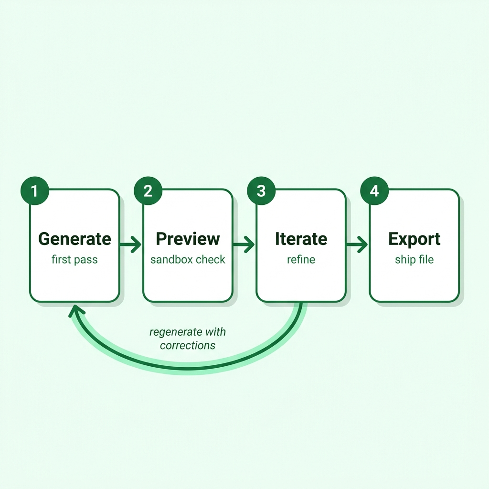
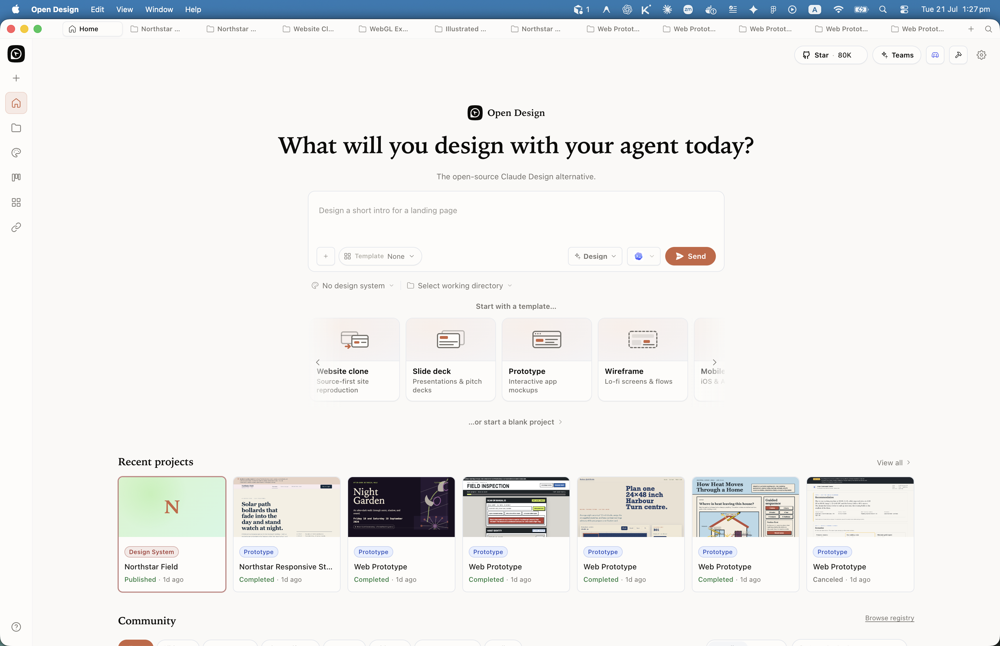
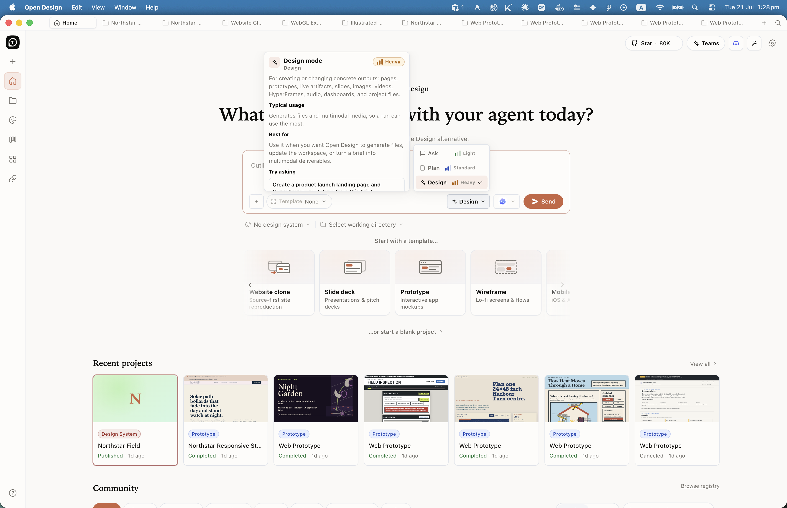
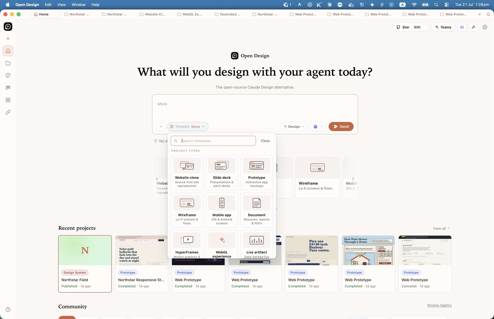
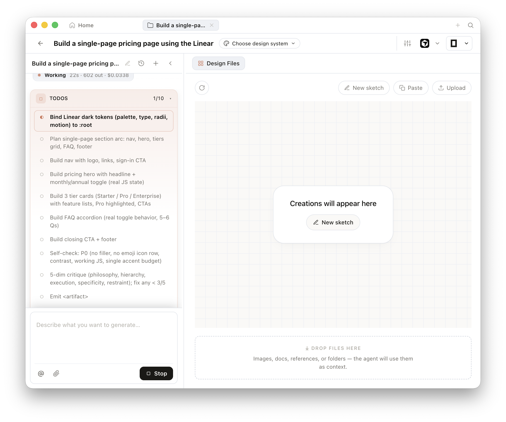
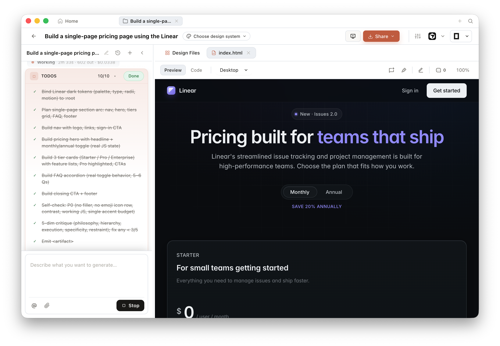
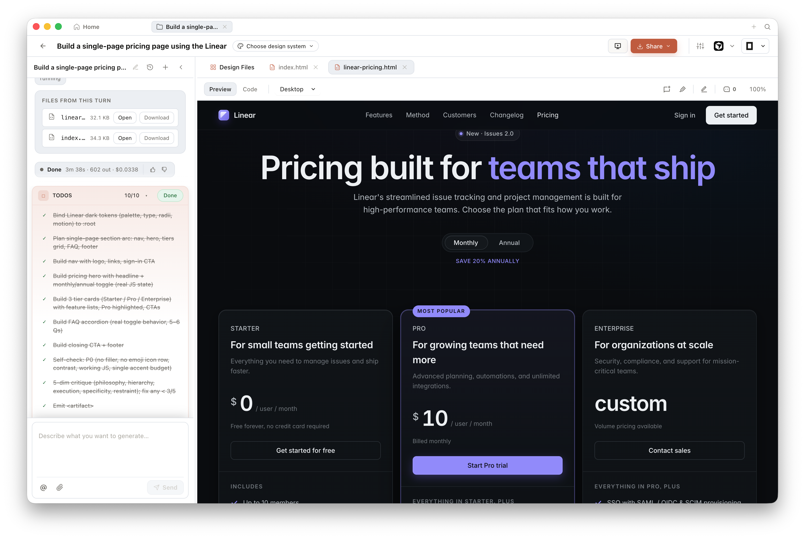
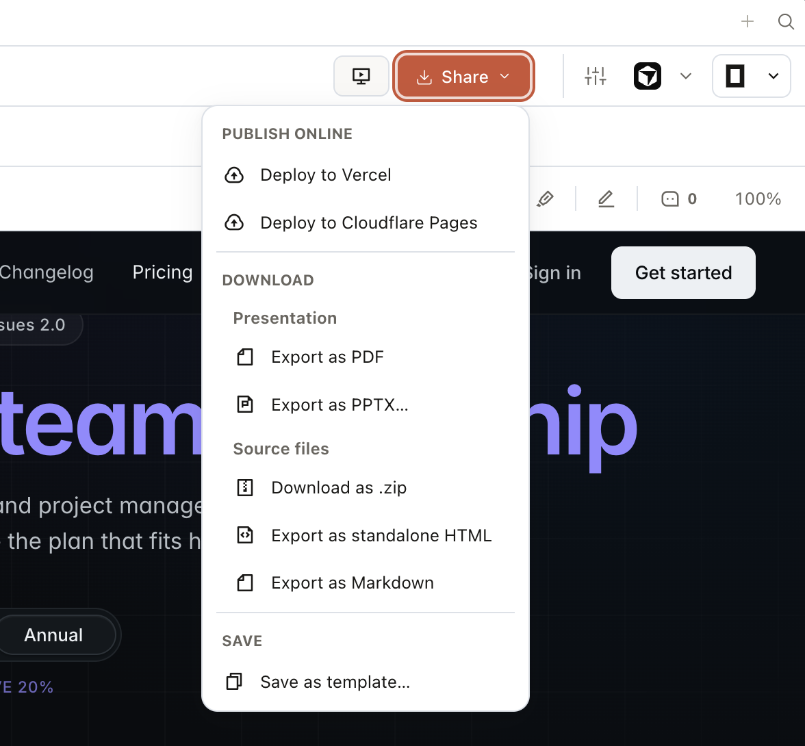

Chapter
03
Your First Artifact
The complete generate-preview-iterate-export loop
Every Open Design workflow, no matter how complex, is the same four-beat loop: generate, preview, iterate, export.

3.1 Connect One Agent
Wire a single coding-agent CLI to Open Design via the MCP installer
Open Design doesn't generate anything on its own. It needs a brain --- a coding-agent CLI connected over MCP (Model Context Protocol), the open standard for wiring AI agents to external tools. Your first step is connecting one agent. Once that's done, you own the loop.
As of June 2026, Open Design supports 21+ coding-agent CLIs including Claude Code, Cursor, GitHub Copilot, OpenAI Codex CLI, Gemini CLI, OpenCode, Kimi CLI, and Aider (per the Open Design README at github.com/nexu-io/open-design). Each connects through the same command pattern: od mcp install <agent>.
Before running that command, the daemon must already be running. If you followed Chapter 02, you started it with pnpm tools-dev run web and can confirm it's healthy at http://localhost:7456. If the page is blank, the daemon isn't up yet --- start there before continuing.
Installing the MCP connection
With the daemon running, connect Claude Code in one command:
$ od mcp install claude-codeTo connect a different agent instead:
$ od mcp install cursor
$ od mcp install copilot
$ od mcp install codexThe installer writes the MCP server entry to your agent's configuration file. For Claude Code, that's ~/.claude/settings.json. For Cursor, it updates .cursor/mcp.json. You don't need to know the details to proceed --- the installer handles them.
After installation, restart your agent CLI so it picks up the new MCP server. Then confirm the connection from inside the agent by listing available MCP tools. You should see Open Design tool names like od_generate, od_preview, and od_export in the tool list.
Connect exactly one agent for your first loop. Once you know the loop works end-to-end, you can wire additional agents. Running two CLIs against the same daemon on your first run adds noise without adding value.
Confirm the daemon is running by visiting http://localhost:7456 in a browser. You should see the Open Design UI.
Open a terminal and run od mcp install claude-code (or substitute your agent name).
$ od mcp install claude-codeRestart your agent CLI. In Claude Code, this means closing and reopening the terminal session, or running /mcp to reload MCP servers.
Verify the connection by asking your agent: List the Open Design MCP tools available. A healthy connection returns tool names. A failed connection returns nothing or an error about an unreachable MCP server.
3.2 Pick a Brand and Prompt
Set the composer levers, choose a mode, attach a brand system, then write the first prompt
Before you generate anything, you set the home composer and make two content choices: which brand system to apply, and what artifact to ask for. Neither choice is permanent --- you'll iterate after the first generation --- but starting with clear levers and a concrete prompt gives the agent constraints to work against.
One composer, many levers
As of Open Design desktop v0.15.1, the home surface is built around a single prompt composer with attached levers: attachment, template, mode, agent and model, design system, and working directory. Every lever is optional. Defaults are sane. Selections become chips you can clear. The product model is not a dashboard of separate tools --- it is one box with constraints you can see before you hit Send.

Ask, Plan, Design — modes as cost contracts
The mode dropdown is not a cosmetic label. Ask, Plan, and Design map to Light, Standard, and Heavy expected cost, and the behaviour fork is system-prompt composition:
| Mode | Cost badge | What the agent is allowed to do | When to use it |
|---|---|---|---|
| Ask | Light | Q&A and exploration; no file writes. The model suggests switching modes for build requests. | Discovery, critique of an existing idea, cheap clarification before you spend a Heavy run |
| Plan | Standard | Same context stack as Design, but the deliverable is a planning document (plan.md, outline, or PRD), not the final artifact. |
Scope a multi-file build before you generate pages, decks, or media |
| Design | Heavy | Full charter: discovery, design system, skill, craft, and deck/media contracts. Generates and edits concrete project files. | Creating or changing pages, prototypes, live artifacts, slides, images, video, HyperFrames, audio, or dashboards |

Start ambiguous work in Ask or Plan. Switch to Design only when you know what should land on disk. The mode chip on each sent message keeps the cost choice visible in the chat history.

Choosing a brand system
As of June 2026, Open Design ships approximately 150 brand-grade DESIGN.md systems (per the Open Design README at github.com/nexu-io/open-design). These include systems named after well-known products — Linear, Stripe, Vercel, Apple, Airbnb, Tesla, Notion, Figma, and many others. Each is a machine-readable brand contract: colors, typography, spacing, component rules, and voice, expressed as text the agent reads before generating. Open Design bundles these systems in its own design-systems/ directory as DESIGN.md files; the values come from Open Design's own bundled configuration, not from any brand's published guidelines.
For your first artifact, I recommend using one of the named systems rather than writing your own. The Linear brand system's defined dark palette and tight grid spacing make it a useful reference for studying how a DESIGN.md constrains a generated pricing page or dashboard. The Stripe brand system's high-contrast style makes it a clear study for documentation and landing page layouts. Pick the one whose structure matches what you're trying to learn — both are useful for understanding how a DESIGN.md shapes generation.

The bundled brand systems named after well-known companies are included for learning the structure of a DESIGN.md --- not as a license to publish artifacts that impersonate those companies' identities. Use them to study the format, then author your own brand system for anything you ship. Refer to Chapter 05 for house-brand authoring.
Writing the first prompt
The most important habit in the four-beat loop is specificity on the first prompt. A vague "build me a landing page" leaves the agent guessing at every structural decision. A specific prompt locks in structure, content, and interactive behavior, leaving the agent to focus on brand-compliant execution.
Here's the prompt from the chapter brief --- a concrete pricing page you can paste directly:
Build a single-page pricing page using the Linear brand system:
three tiers (Starter, Pro, Enterprise),
monthly/annual toggle,
dark theme,
call-to-action button,
FAQ section at the bottom.That prompt tells the agent five things: the artifact type (single-page pricing page), the brand system (Linear), the content structure (three tiers, toggle, FAQ), the visual mode (dark), and the interaction required (toggle). When the first generation lands, you'll know exactly which decisions were made by the agent and which are left for you to iterate.
I've run this loop across web pages, decks, and dashboards, and the single biggest quality lever isn't the model --- it's prompt specificity. Agents are good at following constraints; they're poor at inventing structure from nothing. Give them structure in the prompt, and they'll spend their capability on brand fidelity and visual quality. Leave structure vague, and you'll spend three iterations just converging on what the artifact should contain.
3.3 Watch It Stream
The artifact streaming into the sandboxed preview via SSE
Submit your prompt and watch the preview pane. The artifact doesn't appear all at once --- it streams. Open Design's daemon pushes the agent's output over SSE (Server-Sent Events) as the model generates, and the streaming artifact parser reconstructs it into live HTML inside a sandboxed preview iframe in real time.
What you see while it streams isn't a loading spinner. It's the actual artifact being assembled token by token. Structure appears first --- usually the document skeleton, then layout blocks, then content, then colors and details. By the time the stream ends, you have a fully rendered, interactive artifact you can click around in immediately.

Understanding the sandbox
The preview runs in a sandboxed srcdoc iframe. Per Open Design's documented sandbox configuration (v0.9.0), the sandbox attribute on the iframe is set to restrict access, meaning the generated HTML is isolated from your browser's main page context by design — it is not intended to access your filesystem, local storage, or other page context. This isolation is the safety architecture, not a limitation. The agent produces arbitrary code, and that code runs in a contained environment defined by those sandbox attributes.
You can interact with the rendered artifact directly: click buttons, toggle the monthly/annual switch, expand the FAQ items. Everything that works in the preview is real interactivity. The sandbox doesn't clip it --- it just keeps it contained.

The four-beat loop, beat one
Agent produces HTML via prompt + brand system
Artifact streams into sandboxed iframe over SSE
Follow-up prompt refines the artifact
HTML, PDF, PPTX, MP4, ZIP, or Markdown
You've just completed beat one. The artifact is in the preview. Now look at it critically --- not as a finished design, but as a first draft. The generate step rarely produces a final artifact. It produces a starting point the iterate step will improve.
3.4 Iterate With One Prompt
A single follow-up prompt changes the artifact and re-streams it
The first generation is rarely the one you ship. That's by design: generate, preview, iterate, export. The iterate step is where quality actually comes from. One well-targeted follow-up prompt can change the artifact dramatically --- tightening spacing, adding missing interactivity, or restyling a component that didn't land right.
Reading the first generation critically
Look at your pricing page with a precise eye. Common first-generation gaps in a pricing table:
- The toggle works, but the annual pricing numbers didn't update --- the agent generated static text instead of calculating the discount.
- The FAQ items expand on click, but the animation is missing.
- The Enterprise tier CTA says "Contact us" but isn't linked to a form or modal.
- The type scale doesn't match the Linear system's tight heading hierarchy.
Pick the most impactful gap and write one follow-up prompt targeting it specifically. Broad corrections ("make this better") produce broad, unpredictable changes. Targeted corrections ("fix the annual toggle calculation to show 20% savings, and add a smooth expand animation to FAQ items") produce exact improvements.
The before/after iteration
Here's a follow-up prompt for the most common gap --- the toggle not updating prices:
The monthly/annual toggle doesn't update the tier prices.
Fix it so switching to annual shows prices with a 20% discount
applied and a crossed-out monthly price next to the annual one.
Keep all other styling unchanged.After submitting that prompt, the artifact re-streams into the preview. The whole generate, preview, iterate, export cycle restarts from beat one, but this time you're iterating on an existing artifact rather than generating from scratch. The agent reads both the original prompt's intent and the follow-up correction.
Before iteration:
Toggle switches label between "Monthly" and "Annual" but all three tier prices remain at their monthly values. Annual price shows no discount. The toggle is decorative.
After iteration:
Toggle switches to annual view and updates prices to show 20% discounted amounts. Monthly price appears in smaller crossed-out text. The savings are immediately visible on each tier card.
Before — toggle decorative
Toggle switches label only. Prices unchanged.
After — annual discounts applied
Annual prices show 20% discount with crossed-out monthly rate.

Most people over-index on the generate step and under-invest in the iterate step. I've watched teams get a first generation they like about 60% of, declare it "close enough," and export it. The iterate step is cheap --- one prompt, ten seconds of streaming --- and it's where the gap between "agent output" and "something I'd actually show a client" closes. I'd rather spend two iterations getting the artifact right than spend an hour editing exported HTML by hand.
How many iterations?
There's no rule, but I've found the useful range is one to four follow-up prompts per artifact for a well-scoped piece like a pricing page. After four iterations you're usually fighting diminishing returns or discovering that the original structure needs to change --- which means starting the generate step over with a better initial prompt, not iterating further.
Inspect mode, introduced in v0.6.0 of Open Design, lets you click any element in the preview and see the computed styles applied to it. This is useful during iteration: if a heading isn't matching the type scale defined in the bundled DESIGN.md, Inspect mode tells you exactly which CSS property is wrong, so you can reference it precisely in your follow-up prompt.
3.5 Export and Verify
Export to HTML and PDF, then confirm the output matches the preview
When the artifact looks right in the preview, the loop reaches its fourth beat: export. Open Design can export to six formats. For most web prototypes, HTML and PDF are the primary targets. Export your pricing page to both and verify each before treating the loop as complete.
Exporting the artifact
Trigger exports through the export button in the Open Design UI, or prompt your agent directly:
Export the current pricing page artifact to HTML.Export the current pricing page artifact to PDF, A4, portrait.The HTML export produces a single inlined file: all CSS, fonts, and JavaScript are bundled into one .html document with no external dependencies. This makes it portable --- anyone you send it to can open it in a browser without any build step.
| Format | Use case | Notes |
|---|---|---|
| HTML (inlined) | Web prototype delivery, stakeholder review | Single file, all assets inlined; no build step to open |
| Documentation, print handoffs, async review | Browser-print pipeline; respect print margins in your prompt | |
| PPTX | Presentation decks in PowerPoint / Keynote | Agent-driven; slide structure must be in the artifact |
| MP4 | Motion graphics, HyperFrames-rendered video | Requires a HyperFrames-compatible artifact; CPU-intensive |
| ZIP | Multi-file exports, asset bundles | Preserves separate asset files rather than inlining |
| Markdown | Documentation, content delivery | Availability as of v0.9.0 has not been confirmed against the official export dialog; verify before relying on this format |
Verify the exported file, not just the preview
This step is non-negotiable. Open the exported HTML file in a browser and the PDF in a PDF viewer. Walk through the same interactions you verified in the preview: toggle the pricing, expand the FAQ items, check that the CTA buttons render correctly.
The preview and the exported HTML can diverge. The preview renders in a live sandboxed srcdoc iframe where external resources --- fonts, images loaded from URLs, CDN scripts --- are fetched in real time. The HTML export inliner handles those resources differently, and some may not be included. Always verify the exported file offline, in a browser with no network access, before shipping. If something looks right in the preview but broken in the export, the export is the ground truth.
Click the export button or prompt your agent to export to HTML. Open Design writes the file to your .od/projects/<id>/exports/ directory.
Open the exported HTML file in your browser. Right-click the file and choose "Open with" your browser of choice, or drag it to the address bar. Do not use localhost for this test --- open the file directly from disk to simulate offline delivery.
Walk through every interactive element you built: the monthly/annual toggle, FAQ expansion, and any CTA buttons. Compare them against what you saw in the preview. If anything diverges, note the specific element and go back to the iterate step with a targeted fix.
Export to PDF and open it. Confirm that the layout didn't collapse, fonts rendered, and the page count is what you expected. The PDF pipeline uses browser print, so any element using overflow: hidden without an explicit print style may clip unexpectedly.

You've now completed the full loop: generate, preview, iterate, export. The pricing page is in your hands as a shippable file. This same four steps --- not a variation of them, the exact same steps --- applies to every artifact type Open Design can produce: dashboards, presentation decks, mobile prototypes, and motion graphics.
3.6 When the First Loop Breaks
Troubleshooting common first-loop failures
The first loop fails more often than the second. Most failures fall into five categories: the daemon isn't running, the MCP connection didn't take, the model produced text without a structured artifact, the preview stays blank, or the exported file diverges from what you saw. Each one has a clear cause and a fix.
| Symptom | Cause | Fix |
|---|---|---|
od mcp install fails or command not found |
The od CLI is not installed or not in PATH |
Re-run the installer from the Open Design README; verify od --version returns a version number |
| Agent reports no Open Design MCP tools available | Agent was not restarted after MCP install; or MCP server entry is in the wrong config file | Restart the agent CLI; verify the MCP entry was written to the correct config file for your agent (e.g., ~/.claude/settings.json for Claude Code) |
| Preview pane stays blank after prompt submission | Model returned text output without artifact tags; skill not matched; or model capability too low | Check that a brand system is selected; try switching to a higher-capability model; explicitly name the output format in your prompt ("generate a single-page HTML artifact") |
EADDRINUSE :7456 when starting the daemon |
Another Open Design instance is already holding the port | Run pnpm tools-dev stop to kill the prior instance, then pnpm tools-dev run web. Or start on an alternate port: OD_PORT=7458 pnpm tools-dev run web |
| Exported HTML looks different from the preview | The export inliner handles external assets differently than the live srcdoc iframe; fonts or images loaded via CDN URL may not be included in the export |
Verify the export file offline. If assets are missing, add explicit inline instructions to your artifact prompt ("use only system fonts; no external CDN imports") |
The artifact tag failure mode
The blank-preview failure deserves extra explanation because it surprises people. Open Design's streaming artifact parser looks for structured artifact tags in the model's response. If the model produces plain text --- a description of a pricing page instead of the HTML for one --- the parser has nothing to render, and the preview stays blank.
This happens most often when: the skill isn't matched (the agent doesn't know it's supposed to produce structured output), the model being used doesn't have enough capability to follow the output format, or the prompt is ambiguous enough that the model defaulted to an explanation instead of an implementation. The fix is almost always to make the prompt more specific and confirm a skill is active in the generation.
Node version mismatches remain the most common failure for from-source installs. Open Design pins to Node ~24 and pnpm 10.33.x (as of v0.9.0, released June 2, 2026). If you see EBADENGINE errors during install, the fix is to install the exact pinned Node version and re-run the install sequence.
If you hit EBADENGINE, the full fix sequence using nvm:
$ nvm install 24
$ nvm use 24
$ corepack enable
$ pnpm install
$ pnpm tools-dev run webOr with fnm:
$ fnm install 24
$ fnm use 24
$ corepack enable
$ pnpm install
$ pnpm tools-dev run webFor the port conflict, stop the existing instance first:
$ pnpm tools-dev stop
$ pnpm tools-dev run web
# Or use an alternate port:
$ OD_PORT=7458 pnpm tools-dev run webDaemon health check
When in doubt, the quickest health check is: open http://localhost:7456 in a browser. If it loads the Open Design UI, the daemon is running. If it doesn't respond, the daemon is down. Start there before debugging anything else --- every other failure in the loop depends on the daemon being healthy.
$ node daemon/cli.js --no-open
Open Design v0.9.0
API server → http://localhost:7456/api
Web frontend → http://localhost:7456
SSE endpoint → http://localhost:7456/events
Daemon ready. Listening on port 7456.
MCP server active. Waiting for agent connections.node daemon/cli.js --no-open. A healthy start confirms the API server, web frontend, and SSE endpoint are all serving on port 7456. Schematic illustration (not a screenshot).One more table: export formats quick-reference
| You want to... | Use format | Watch for |
|---|---|---|
| Share an interactive web prototype with stakeholders | HTML (inlined) | External CDN assets won't be inlined; test offline |
| Hand off a layout to a non-technical reviewer | Print-layout clipping on overflow elements | |
| Deliver slides as a deck file | PPTX | Requires a deck-type artifact with slide structure |
| Render a motion graphic to video | MP4 | CPU-intensive; keep clips short during iteration |
| Bundle assets separately without inlining | ZIP | Recipient needs a server to serve the asset paths |
| Extract content as structured text | Markdown | Availability as of v0.9.0 unconfirmed; verify in your installed version before use |